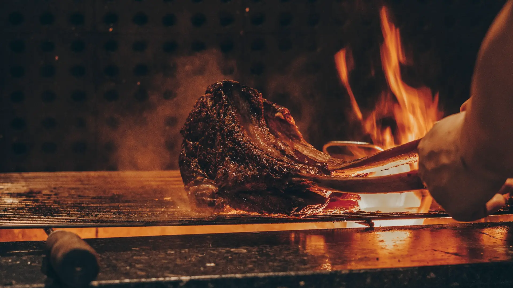
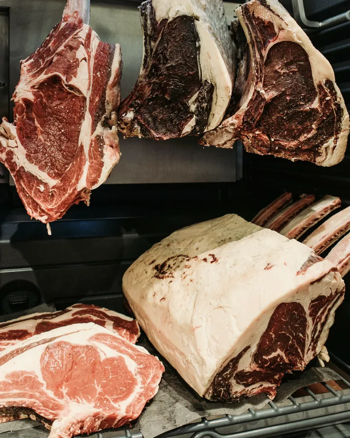
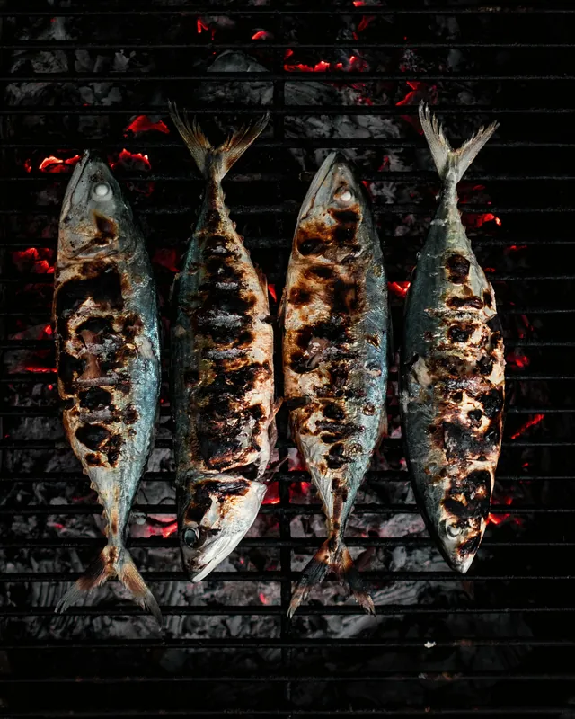
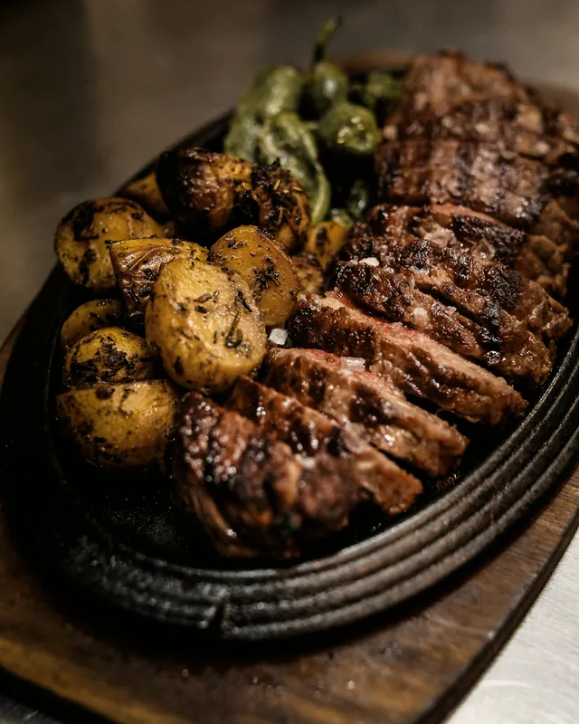
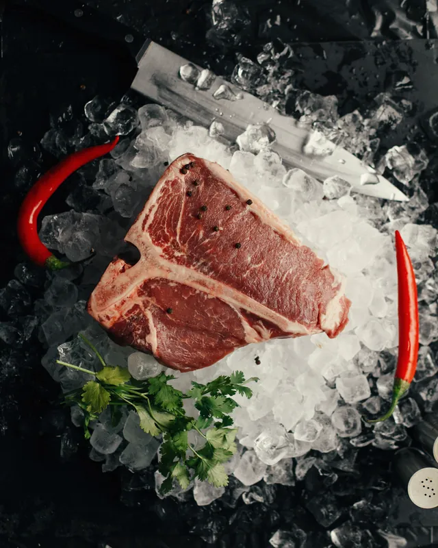
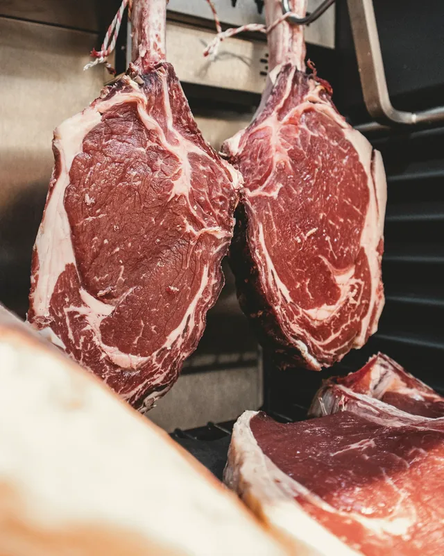
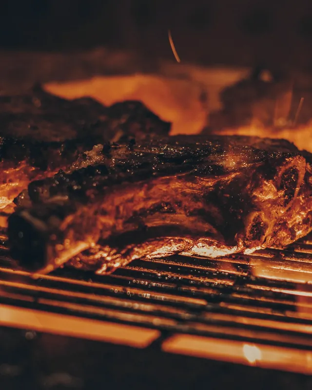
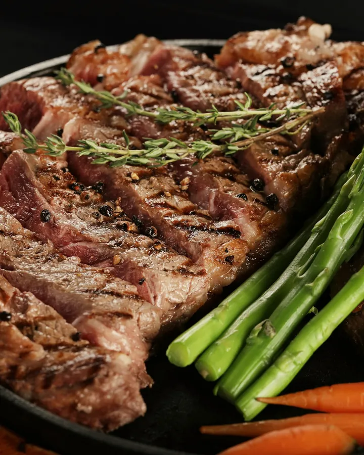

Asador de brasa de encina
Brasa y paciencia
Chuleta de vaca madurada, pescado del día a la parrilla y una brasa que se enciende a las once para estar lista a la una.
Mar a sáb, comidas y cenas · Dom, comidas
El fuego
Encina, tiempo y punto
La brasa se enciende a las once con leña de encina para estar en su punto a la una. La carne madura en nuestra cámara entre 30 y 45 días; el pescado llega cada mañana de la lonja y va entero a la parrilla.
- Brasa de encina
- Maduración de 30 a 45 días
- Pescado de lonja

Las piezas
Por pieza y por peso
De la brasa
- Chuleta de vaca madurada45 días · para dos, en torno a 1 kg76 €/kg
- Solomillo de vaca90 €/kg
- Costilla a la brasaAsada a fuego lento24 €
- Morcilla de BeasainA la brasa12 €
Del mar
- Rodaballo salvajeEntero, para dos85 €/kg
- Besugo75 €/kg
- Lubina salvaje62 €/kg
- Kokotxas de merluzaEn salsa verde28 €
Para empezar
- Pimientos de Gernika9 €
- Tomate con cebolletaCon aceite de arbequina10 €
- Espárragos a la brasa14 €
- Croquetas de chuletaSeis unidades12 €
Postres
- Tarta de queso7 €
- Goxua6 €
- Idiazabal con membrillo8 €
Las piezas se pesan delante de ti antes de ir al fuego. Carta de ejemplo: en tu web, la tuya.
Galería
Del fuego a la mesa





Fotos de Unsplash
Reservas
Mesa junto al fuego
Para la chuleta grande o el rodaballo entero, reserva y avísanos: así te guardamos la pieza.
Dinos día y horaComida o cena, y cuántos sois.
Elige la piezaSi quieres, te la apartamos.
Te confirmamosEn el mismo chat.

Horario
Cuándo venir
Mar a sáb, comidas y cenas · Dom, comidas
| Lunes | Cerrado |
|---|---|
| Martes | 13:00–16:00 · 20:30–23:00 |
| Miércoles | 13:00–16:00 · 20:30–23:00 |
| Jueves | 13:00–16:00 · 20:30–23:00 |
| Viernes | 13:00–16:00 · 20:30–23:00 |
| Sábado | 13:00–16:00 · 20:30–23:00 |
| Domingo | 13:00–16:00 |
Cómo llegar
En Amara, calle Isabel II
Calle Isabel II 1420011 Donostia / San Sebastián
Al cargar el mapa, tu navegador se conecta con Google.
Texto de ejemplo: en tu web, cómo llegar a pie, en autobús o en coche desde tu barrio.